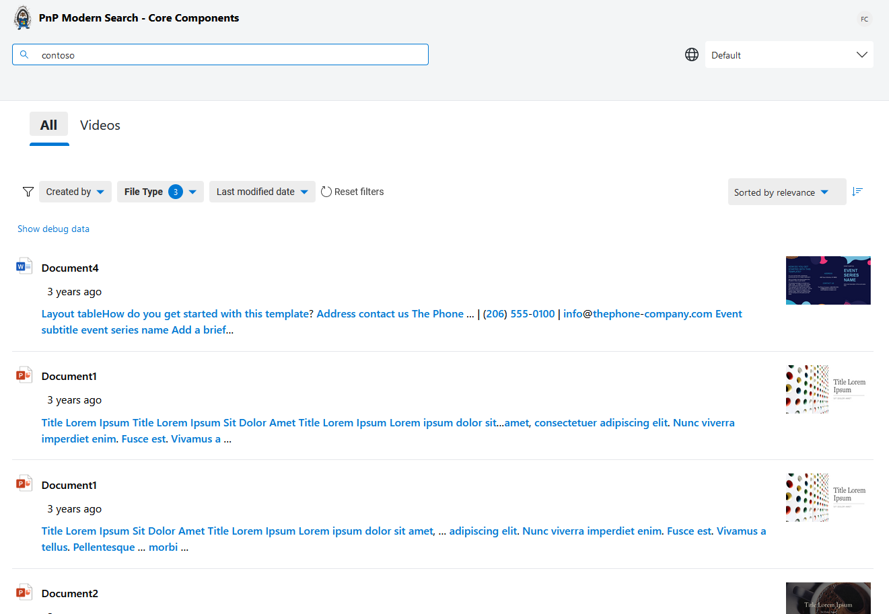
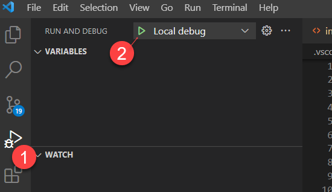
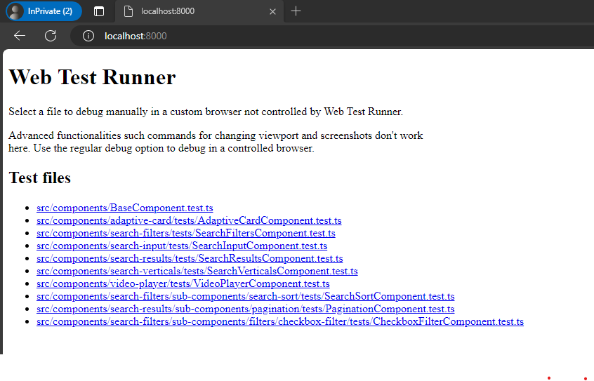
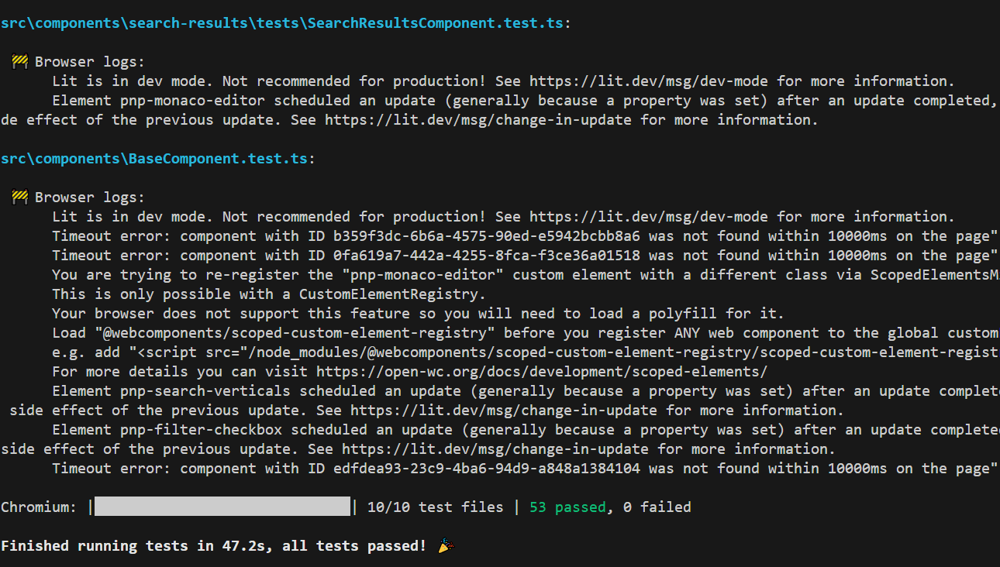
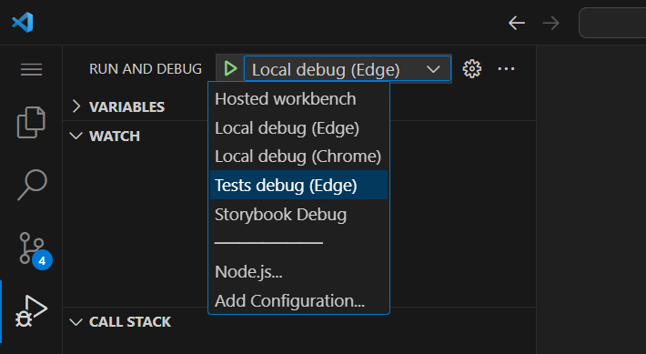
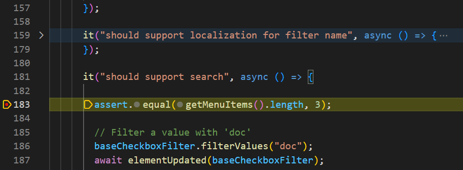
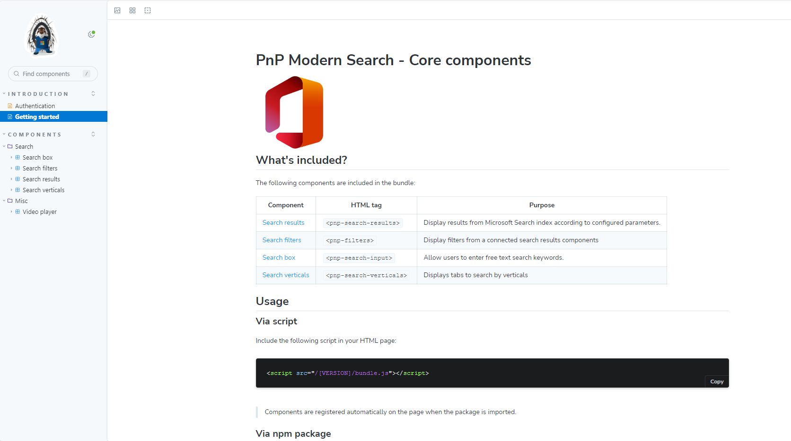
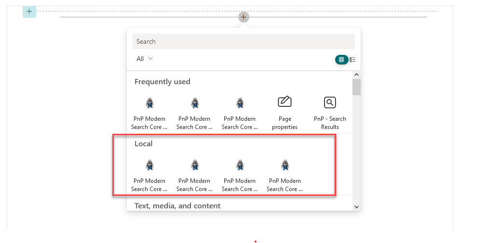

Getting started
Getting started¶
Prerequisites¶
- Visual Studio Code with the following recommended extensions installed:
- MkDocs
- Node.js v16.19.1 or higher
Create Azure AD application¶
Get the solution locally¶
-
Clone the repository from GitHub
-
In the the project root folder, install dependencies using
pnpm i. We usepnpmworkspaces andlernabehind the scenes to manage depedencies correctly for all projects. - Build all projects using
npx lerna run build
Web components¶
Run and debug the solution¶
- Open the project root folder in Visual Studio Code.
-
From the 'Terminal' window, run the following command:
npx lerna run serve --scope=@pnp/modern-search-coreThis will bundle the solution and serve it from a local server on adresss http://localhost:8080/index.html:

Use index.html as your sandbox
The packages/components/dev/index.html is a sandbox page, meaning you can update it any way you want to test components behavior. To know all available parameters for components, go to the "playground".
-
To debug the components, start debugging using the "Local debug (Edge|Chrome)" configuration:

Run and debug tests¶
- Open the
packages/componentsfolder in Visual Studio Code. -
From the 'Terminal', run the following command:
pnpm run test:watchThis will start tests in watch mode on the
http://localhost:8000/. Choose then the test you want to debug:
Notice
To run all tests (ex: before a commit), run
npx lerna run test --scope=@pnp/modern-search-core:  -
Launch the "Debug tests Edge" VSCode configuration and choose the test you want to debug:

-
Put breakpoints in your tests and refresh the page to trigger the test again:

Run Storybook stories¶
We use Storybook to demo components in different scenarios:

To run Storybook locally run the following command:
npx lerna run docs:watch --scope=@pnp/modern-search-core
Notice
All stories are read from the packages/components/src/stories folder.
SPFx Web Parts¶
Run and debug the solution¶
- Open the project root folder in Visual Studio Code.
-
From the 'Terminal', run the following command:
npx lerna run serve --scope=@pnp/modern-search-core-spfx -
You can also go directly to
`packages/spfxand runnpm run serve. -
Open the Hosted workbench debug configuration and add WebParts from Local category:

Notice
If you need to work on both web components and Web Parts at the same time, you can run the following commands
- From
packages/components, runpnpm run build:watch - From
pacakges/spfx, runnpm run serve
Run the MkDocs documentation¶
- Open the project root folder in Visual Studio Code.
-
From the 'Terminal', run the following command:
pip install pygments toc pymdown-extensions markdown_includepython -m mkdocs serve